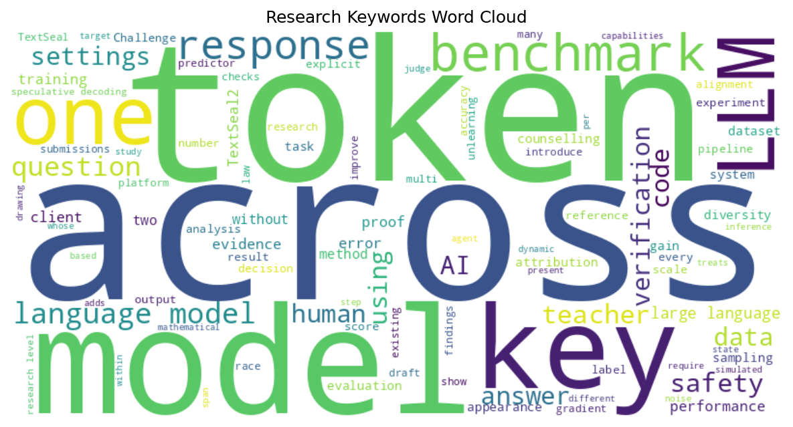

El Mustapha Mansouri, Eikichi Kimura, Masato Koga, Keigo Arai
2026-10-29T17:47:50Z
An autonomous research laboratory could conduct an entire study, from formulating questions to preparing manuscripts. Artificial intelligence (AI) offers one route towards this goal. Recent AI systems...
Steven Yu, Sheng-Yu Wang, Kimia Hamidieh, Antonio Torralba, David Bau
2026-10-29T17:59:53Z
Data attribution methods for Language Models (LMs) are typically evaluated using downstream tasks like fact retrieval. However, existing evaluations vary multiple dataset properties simultaneously, ma...
Tom Sander, Pierre Fernandez, Itai Gat, Haiming Bao, Jiaxin Shi et al.
2026-10-29T17:54:12Z
We present TextSeal2, a distortion-free watermark for large language models that keeps its signal under speculative decoding: tokens that replace rejected drafts remain watermarked with the same keys,...
Tom Sander, Pierre Fernandez, Itai Gat, Haiming Bao, Jiaxin Shi et al.
2026-10-29T17:54:12Z
We present TextSeal2, a distortion-free watermark for large language models that keeps its signal under speculative decoding: tokens that replace rejected drafts remain watermarked with the same keys,...
Xiangyu Xu, Bangshuai Peng, Ziyi Liu, Mengjie Zhao, Chenhao Lu et al.
2026-10-29T17:34:04Z
How effectively can vision-language-action (VLA) models learn diverse language-conditioned behaviors as training data scales? Investigating this question requires large and varied robot datasets, whos...
Qiushi Sun, Da Yu, Alexander Knop, Amer Sinha, Lingpeng Kong et al.
2026-10-29T17:45:26Z
Building and scaling computer-using agents (CUAs) across desktop, mobile, and web environments requires reliable task-completion verification for data curation, evaluation, and reinforcement learning....
Qiushi Sun, Da Yu, Alexander Knop, Amer Sinha, Lingpeng Kong et al.
2026-10-29T17:45:26Z
Building and scaling computer-using agents (CUAs) across desktop, mobile, and web environments requires reliable task-completion verification for data curation, evaluation, and reinforcement learning....
Qiushi Sun, Da Yu, Alexander Knop, Amer Sinha, Lingpeng Kong et al.
2026-10-29T17:45:26Z
Building and scaling computer-using agents (CUAs) across desktop, mobile, and web environments requires reliable task-completion verification for data curation, evaluation, and reinforcement learning....
Haowen Shi, Xuzhe Yan, Fahao Chen, Peng Li
2026-10-29T17:36:01Z
Predicting how many tokens a large language model (LLM) will decode, using only prefill-phase hidden states, is a key primitive for inference scheduling. We show that current benchmarks conflate predi...
Haowen Shi, Xuzhe Yan, Fahao Chen, Peng Li
2026-10-29T17:36:01Z
Predicting how many tokens a large language model (LLM) will decode, using only prefill-phase hidden states, is a key primitive for inference scheduling. We show that current benchmarks conflate predi...
Qiyao Ma, Xiaodong Liu, Weiwei Yang, Mingqian Feng, Chengquan Guo et al.
2026-10-29T17:56:53Z
Safety alignment has enabled large language models to reliably refuse harmful requests directly, yet the same request distributed across a multi-turn conversation still succeeds far too often. This br...
Yifu Luo, Chuang Ma, Zeyu Chen, Enkelejda Kasneci, Qi Chen et al.
2026-10-29T17:44:42Z
On-policy Self-distillation (OPSD) has proven effective for post-training large language models by constructing a teacher conditioned on privileged references. However, existing approaches keep the te...
Lidong Lu, Jiaxin Lv, Liangrui Dong, Xinyi Mao, Lidong Zou et al.
2026-10-29T17:33:34Z
Images reveal appearances, but counting often asks about physical objects. A single entity may be visible directly, in several reflections, or through glass, so detecting every visible occurrence does...
Eric Rudolph, Philipp Steigerwald, Jens Albrecht
2026-10-29T17:41:59Z
This study investigates the capabilities of Large Language Models to simulate counselling clients in educational role-plays in comparison to human role-players. Initially, we recorded role-playing ses...
Eric Rudolph, Philipp Steigerwald, Jens Albrecht
2026-10-29T17:41:59Z
This study investigates the capabilities of Large Language Models to simulate counselling clients in educational role-plays in comparison to human role-players. Initially, we recorded role-playing ses...
Alan Sorani, Ashvni Narayanan, Michael Shalyt, Tali Monderer, Rotem Kalisch et al.
2026-10-29T17:39:04Z
As AI's mathematical capabilities rapidly improve, meaningful benchmarks are shifting from university-level problems and math olympiads to research-level mathematics. The Ramanujan Challenge is a benc...
Alan Sorani, Ashvni Narayanan, Michael Shalyt, Tali Monderer, Rotem Kalisch et al.
2026-10-29T17:39:04Z
As AI's mathematical capabilities rapidly improve, meaningful benchmarks are shifting from university-level problems and math olympiads to research-level mathematics. The Ramanujan Challenge is a benc...
Max Neuwinger, Hanna Yukhymenko, Imanol Schlag
2026-10-29T17:26:02Z
Safety alignment for Large Language Models is heavily focused on English with limited multilingual representation, particularly damaging low-resource language performance. Related open training datase...
M. Mohaiminul Islam, Muhammad Abulaish
2026-10-29T17:26:39Z
Legal Question Answering (QA) over statutory texts is a challenging task in Natural Language Processing (NLP), especially in low-resource settings with complex legal systems. It requires answers that ...
Juan Belieni, Ana Carolina Erthal, Eliezer de Souza da Silva, Diego Mesquita
2026-10-29T17:13:53Z
Unlearning concerns the task of removing the influence of a sensitive portion of the training data, such as protected, copyrighted or private text, from a model without retraining it from scratch. Whi...
